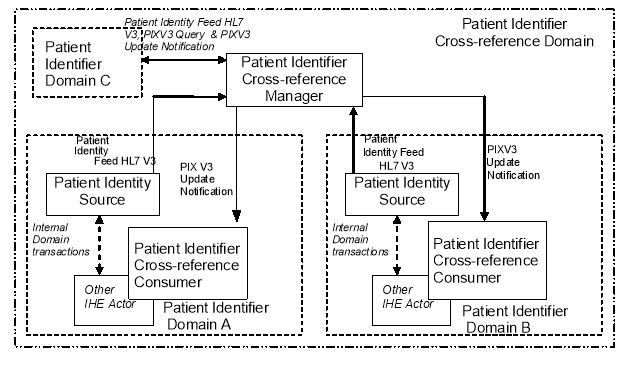
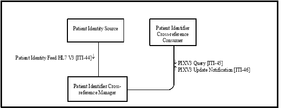

IHE IT Infrastructure (ITI)
Technical Framework
Revision 16.0 – Final Text
The Patient Identifier Cross-referencing HL7 V3 Integration Profile (PIXV3) is targeted at cross-enterprise Patient Identifier Cross-reference Domains (as defined in Section 5) as well as healthcare enterprises with developed IT infrastructure. The discussion in Section 5 fully applies here, with the obvious adjustments to the referenced transactions.
 Figure 23-1: Process Flow with Patient Identifier Cross-referencing HL7 V3
The actors in this profile are the same as the actors defined in the PIX Profile (Section 5.1). Figure 23.1-1 shows the actors directly involved in the Patient Identifier Cross-referencing HL7 V3 Integration Profile and the relevant transactions between them. Other actors that may be indirectly involved due to their participation in other related profiles are not shown.
Figure 23.1-1: Patient Identifier Cross-referencing HL7 V3 Actor Diagram
Table 23.1-1 lists the transactions for each actor directly involved in the Patient Identifier Cross-referencing Profile. In order to claim support of this Integration Profile, an implementation must perform the required transactions (labeled “R”). Transactions labeled “O” are optional. A complete list of options defined by this Integration Profile and that implementations may choose to support is listed in the Section 23.2.
Table 23.1-1: Patient Identifier Cross-referencing HL7 V3 Integration Profile - Actors and Transactions
|
Actors |
Transactions |
Optionality |
Section |
|
Patient Identity Source |
Patient Identity Feed HL7 V3 [ITI-44] |
R |
|
|
Patient Identifier Cross-reference Consumer |
PIXV3 Query [ITI-45] |
R |
|
|
PIXV3 Update Notification [ITI-46] |
O |
||
|
Patient Identifier Cross-reference Manager |
Patient Identity Feed HL7 V3 [ITI-44] |
R |
|
|
PIXV3 Query [ITI-45] |
R |
||
|
PIXV3 Update Notification [ITI-46] |
R |
The transactions in this profile directly correspond to the transactions used in the PIX Profile (Section 5) and provide the identical functionality. Table 23.1-2 describes this correspondence.
Table 23.1-2: Transactions Correspondence between the PIX and PIXV3 Profiles
|
Transactions in PIX |
Vol. & Section |
Transactions in PIXV3 |
Section |
|
Patient Identity Feed [ITI-8] |
Patient Identity Feed HL7 V3 [ITI-44] |
||
|
PIX Query [ITI-9] |
PIXV3 Query [ITI-45] |
||
|
PIX Update Notification [ITI-10] |
PIXV3 Update Notification [ITI-46] |
Options that may be selected for this Integration Profile are listed in the Table 23.2-1 along with the Actors to which they apply. Dependencies between options when applicable are specified in notes.
Table 23.2-1: Patient Identifier Cross-referencing HL7 V3 - Actors and Options
|
Actor |
Options |
Vol. & Section |
|
Patient Identity Source |
Pediatric Demographics |
|
|
Patient Identifier Cross-reference Manager |
Pediatric Demographics |
|
|
Patient Identifier Cross-reference Consumer |
PIXV3 Update Notification |
The experience of immunization registries and other public health population databases has shown that matching and linking patient records from different sources for the same individual person in environments with large proportions of pediatric records requires additional demographic data.
In particular, distinguishing records for children who are twins, triplets, etc. – that is, avoiding false positive matches - may be difficult because much of the demographic data for the two individuals matches. For instance, twin children may have identical last names, parents, addresses, and dates of birth; their first names may be very similar, possibly differing by only one letter. It can be very difficult for a computer or even a human being to determine in this situation whether the slight first name difference points to two distinct individuals or just a typographical error in one of the records. Additional information is extremely helpful in making this determination.
Pediatric Demographics makes use of the following six additional demographic fields to aid record matching in databases with many pediatric records.
|
Field |
Reason for inclusion |
Value |
|
Mother’s Maiden Name |
Any information about the mother is helpful in making a match |
Helps create true positive matches |
|
Patient Home Telephone |
A telecom helps match into the right household |
Helps create true positive matches |
|
Patient Multiple Birth Indicator |
Indicates this person is a multiple – twin, triplet, etc. |
Helps avoid false positive matches of multiples |
|
Patient Birth Order |
Distinguishes among those multiples. |
Helps avoid false positive matches of multiples |
|
Last Update Date/Time, Last Update Facility |
These fields, although not strictly demographic, can effectively substitute when multiple birth indicator and birth order are not collected. They indirectly provide visit information. Provider visits on the same day may likely indicate two children brought to a doctor together. |
Helps avoid false positive matches of multiples |
Pediatric Demographics query parameter fields are:
Pediatric Demographics are defined as all of the following:
Sections 5.3.1 and 5.3.2 describe use cases that this profile addresses. Figures 5.3-1 and 5.3-2 also apply with the changes to the corresponding PIXV3 transactions as specified in Table 23.1-2.
The discussion in Section 5.4 fully applies to this profile.
The patient identifier in HL7 V3 messages is represented by the II data type. This data type has two components: a root, and an extension. For compatibility with the use of patient identifiers in profiles using HL7 V2 messages, and with the specification of the patient identifier in the XDS Profile, the patient identifier SHALL be represented as a root and an extension, where the root is an appropriately assigned OID. The direct correspondence between the II data type and the HL7 Version 2.5 CX data type (used in field PID-3) is shown in ITI TF-2x: Appendix R.
The implementer of this profile is advised that many risks cannot be mitigated by the IHE profile and instead the responsibility for mitigation is transferred to the vendor, and occasionally to the operational environment.
In order to address identified security risks: